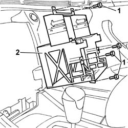

5580P24 CONNECT CONTROL UNIT SUPPORT - R.R.
- Path
- Procedures > 55 ELECTRICAL EQUIPMENT > 5580 SPECIAL ACCESSORIES > 5580P CONNECT PANEL > 5580P24 CONNECT CONTROL UNIT SUPPORT - R.R.
- Kind
- repair procedure (removal / refitting; the operation number is the code)
- Applies to
- all engines; all production periods
- Interactive page
- https://sloeber94.github.io/elrnDB-lThss/en/#/151064
Applies to: all engines; all production periods
 Removing
Removing
 Refitting
Refitting- Open the boot and disconnect the negative battery terminal.
- [5580P26]
See in Op. 5580P20 CONNECT CONTROL UNIT - R.R.
1. Undo the bolts fixing the connect support.
2. Remove the connect support.

Applies to: all engines; all production periods
Refitting
Removing- Fit the support in the housing in the dashboard.
- Fit the connect support tightening the fixing bolts.
See in Op. 5580P20 CONNECT CONTROL UNIT - R.R.
- [5580P26]
- Connect the negative battery terminal.